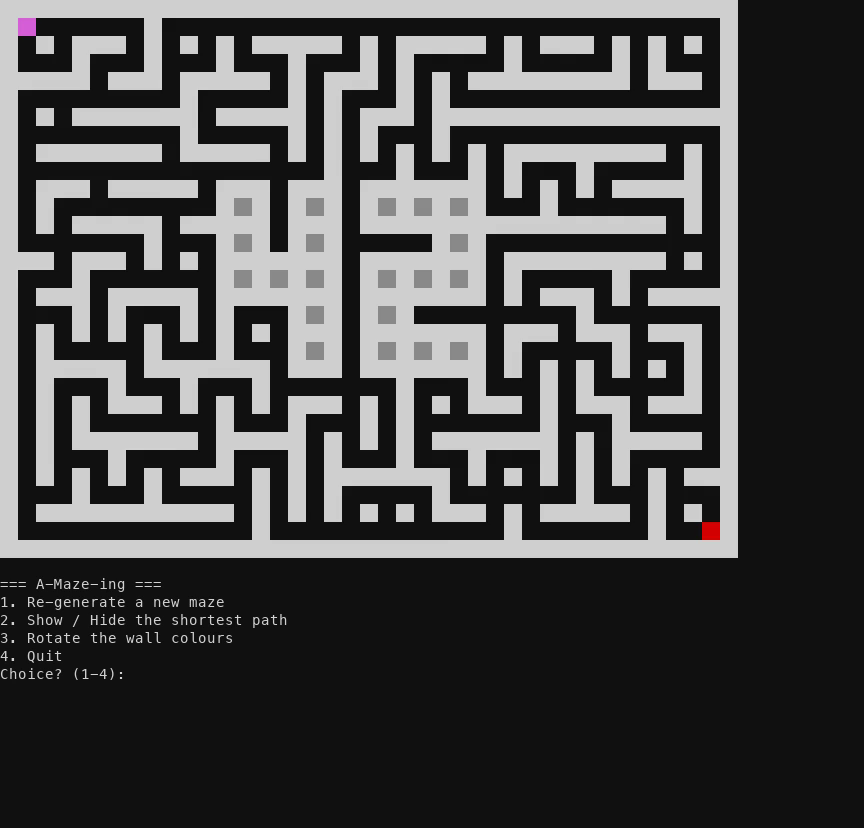
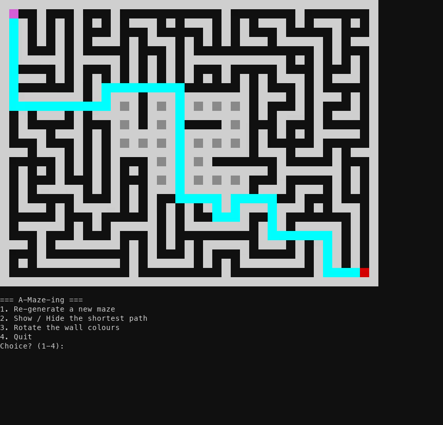

A-Maze-ing — 42 Tokyo cursus
config.txt から「唯一経路の迷路」も
「Pac-Man 盤面」も生成する
再帰バックトラッカー法で全域木を掘り、PERFECT=True ならそのまま唯一経路の迷路に、
PERFECT=False（既定）ならループ追加とブレイディングで行き止まりゼロの
Pac-Man 盤面に変える。中央には完全に孤立した "42" 模様を描く。
flake8 0 / mypy --strict 0
42提供 maze_analyzer.py 全合格
1. 課題の概要
en.subject.pdf（A-Maze-ing, version 2.3）で定義された、Python 3.10+ の迷路生成課題。
python3 a_maze_ing.py config.txt で起動し、設定ファイルから迷路を生成してファイルに書き出し、
ターミナルに表示する。生成ロジックは mazegen という独立パッケージに切り出し、
後続プロジェクトから pip install して再利用できるようにする（Chapter VI）。
repo/ にある。このファイル自体と REQUIREMENTS.md /
REPORT.md / demo.mp4 は提出物ではなく、作業の可視化・検証記録用。
2. 必須要件と対応状況
| 章 | 要件 | 対応 |
|---|---|---|
| III | Python 3.10+ / flake8 / 例外処理 / 型ヒント+mypy / docstring / Makefile | 全ファイルで適用。make lint-strict で flake8+mypy --strict が0エラー |
| IV.2-3 | python3 a_maze_ing.py config.txt、KEY=VALUE形式、エラーを握りつぶさない |
書式は a_maze_ing.py、範囲は MazeGenerator が確認し、main が全エラーを捕捉 |
| IV.4 | seedで再現、北東南西の壁、連結、境界壁、整合する符号化、3x3以上の空間禁止、 "42"模様、PERFECT True/False | mazegen/generator.py（詳細は§4） |
| IV.5 | 16進数グリッド、空行、entry/exit座標、最短経路(N/E/S/W)、全行 \n |
a_maze_ing.write_maze_file()（§5） |
| V | ターミナルASCII表示、再生成／経路表示切替／壁色変更の対話操作 | display.py、デモ動画で実演 |
| VI | 再利用可能クラス、単一ファイルでpipインストール可能、LICENSE.md | mazegen パッケージ、§7 |
| VII | README.md の必須記載事項一式 | repo/README.md |
| VIII | （ボーナス）行き止まりゼロの盤面 | デフォルトで行き止まりゼロを達成（§6で確認） |
3. データモデル
ビット値は課題PDFの表と完全一致: North=1, East=2, South=4, West=8、ビットが立っていれば
その方向の壁は閉じている。座標は内部的に (row, col)、config.txt / 出力ファイルは
x,y なので a_maze_ing.py で変換する。
4. 迷路生成アルゴリズム
_carve_spanning_tree を1手ずつ見る
全セルの壁が閉じた状態から始めて、「まだ行っていない隣へ壁を壊して進む」、 「進める隣が無ければ1つ戻る」を、スタックが空になるまで繰り返す（再帰バックトラッカー法を スタックで書いたもの）。下の 6x5 の盤面で、グレーの2マスは "42" 模様のセル（掘る対象外）、入口は左上。 「次へ」を押すと、右のコードの今動いている行が光る。
carvable_set = set(carvable)visited = {entry}stack = [entry]while stack: current = stack[-1] directions = list(Direction) rng.shuffle(directions) advanced = False for direction in directions: nxt = self._neighbour(current, direction) if nxt in carvable_set and nxt not in visited: walls[current] &= ~direction walls[nxt] &= ~direction.opposite visited.add(nxt) stack.append(nxt) advanced = True break if not advanced: stack.pop()PERFECT=True の唯一経路の迷路）。
"42" のセルは carvable_set に入っていないので、一度も壁を壊されずに閉じたまま残る。
_add_loops を1手ずつ見る（全域木の続き）
全域木（上の図の最終形）はループが無く、経路は常に1本しか無い。PERFECT=False
ではここから、まだ閉じている壁をいくつか選んで追加で開け、別経路（ループ）を作る。
開ける本数は max(2, セル数 // 25) で決め、この6x5盤面（28セル）では2本。
壁を開ける前に必ず「3x3の開けた部屋になってしまわないか」をチェックし、なるなら諦める（却下）。
carvable_set = set(carvable)target_extra = max(2, len(carvable) // 25)candidates = self._closed_edges(walls, carvable_set)rng.shuffle(candidates)opened = 0for cell, direction, other in candidates: if opened >= target_extra: break if self._would_make_big_room(walls, cell, other): continue self._open_wall(walls, cell, direction) opened += 1_would_make_big_room の中身は後述）ので、却下が起きやすいのは
むしろ次の _braid_dead_ends（行き止まり解消）のように、既にかなり壁が
開いた盤面に対してさらに開けようとする場面。
なぜこのアルゴリズムか
def _would_make_big_room(self, walls, a: Cell, b: Cell) -> bool:
"""a-b の壁を開けると3x3以上の開けた部屋ができてしまうかを調べる。
両セルを含みうるすべての3x3の窓について、内部の12本の壁が
(このa-b間を開けたと仮定して) 全て開いているかを確認する。"""
if self.height < 3 or self.width < 3:
return False
row_hi, col_hi = max(a[0], b[0]), max(a[1], b[1])
row_lo, col_lo = min(a[0], b[0]), min(a[1], b[1])
top_range = range(max(0, row_hi - 2), min(row_lo, self.height - 3) + 1)
left_range = range(max(0, col_hi - 2), min(col_lo, self.width - 3) + 1)
for top in top_range:
for left in left_range:
if self._window_fully_open(walls, top, left, a, b):
return True
return False
# 全文: repo/mazegen/generator.py- 再帰バックトラッカー（反復・スタック版）で "42" パターン以外の全セルの全域木を掘る。
これだけで
PERFECT=True（唯一経路、ループ無し）が完成する。 PERFECT=Falseでは、全域木の上に ループ追加（独立経路を複数作る）と ブレイディング（行き止まりを解消）を重ねる。既存の木の上に足すだけなので、 接続性・"42"模様の孤立性は最初から保証されたまま変わらない。- どちらの追加操作も、壁を開ける前に 3x3の窓を総当たりでチェックし、 「開けた空間が3x3以上になる壁開放」を拒否する（左のコード）。 a-bを含みうる3x3窓を総当たりし、各窓の内部12本の壁が （a-b間を仮に開けた状態で）すべて開いていたら拒否する。
5. 出力ファイルフォーマット
91539551539151515553
ac54693c3c68383a9516
...（1セル1桁の16進数、行ごとに1行）
0,0
19,14
EEESENEEESESSESSSSENEEENEEEESEESSSSSSSS1セル1桁の16進数（壁ビットが立っていれば閉じている）、空行、entry座標、exit座標、
entryからexitまでの最短経路(N/E/S/W)の順。全行末尾に \n。
6. デモ動画
/ego-e2e-kit:e2e-shot はターミナルCLIにはそのまま適用できない
（ego-browser＝ブラウザ経由のWebアプリE2E専用、URL/ポート前提）ため、同スキルが本来対象とする
要件4のHTMLページ自体をテスト対象に据え、依存確認→10件のテストケース宣言→実操作・
スクリーンショット撮影→報告、というe2e-shotの手順をそのまま最後まで実行した
（詳細は REPORT.md §4.1）。下の動画は、そのe2e-shotが
実際に撮影した9枚のスクリーンショットをそのまま時系列でつないだTEST動画。
さらに、同じego-e2e-kitプラグインの動画生成専用スキル
ego-e2e-kit:test-mov（ナレーション・字幕・赤枠つき）でも別途8ステップの
検証動画を作成した（2本目）。CLI本体の実演は3本目の自前録画で担保する。
① ego-e2e-kit:e2e-shot のスクリーンショットから作成したTEST動画
e2e-shotが実際に撮影した9枚（起動直後／アルゴリズム図／デモ動画セクション／ コード・解説タブの切替／TOC遷移後／モバイル幅トップ／モバイル幅の検証結果表）を結合。 全て合格（コンソールエラー0件、画像・動画・Mermaid全て読み込み成功）。
② ego-e2e-kit:test-mov によるナレーション付きTEST動画（赤枠・字幕・VOICEVOX音声）
8ステップ・48秒。要件対応表・データモデル・アルゴリズム・コード/解説タブ・ デモ動画・検証結果・再利用パッケージの各セクションを、赤枠とナレーションで1つずつ確認し、 最後に合格（pass）判定のナレーションで締める。
③ CLI本体の実演（pexpect/pyte/ffmpeg による対話セッション録画）
実際に python3 a_maze_ing.py config.txt を実行し、
「1: 再生成」→「2: 経路表示」→「3: 色変更」×2→「2: 経路を隠す」→「4: 終了」を自動操作した様子。

起動直後。入口(マゼンタ)・出口(赤)・中央のグレーの"42"模様

「2」で最短経路(シアン)を表示した状態
7. 検証結果
42提供の maze_analyzer.py を、7種類のサイズ × PERFECT True/False × 3種のseed =
42通り、さらに別途 PERFECT=False を59 seedで流し、全てで期待通りの判定になることを確認した。
| 検証項目 | 結果 |
|---|---|
| flake8 . | 0 エラー |
| mypy . --strict | 0 エラー |
| pytest tests/（開発用、非提出） | 5/5 pass |
| PERFECT=True（7サイズ×3seed=21通り） | 全て "PERFECT maze" 判定 |
| PERFECT=False（7サイズ×3seed=21通り + 59seed） | 全て "Pac-Man-USABLE"、real dead-ends=0（ボーナス条件） |
| 5x5（小さすぎるサイズ） | "42"模様を省略し、コンソールに警告を表示（仕様通り） |
| 設定エラー系（必須キー欠落／entry=exit／範囲外／ファイル無し等） | 全てクラッシュせず、わかりやすいメッセージ＋非ゼロ終了 |
| mazegenパッケージの単体インストール | クリーンなvenvに.whlを入れ、from mazegen import MazeGenerator が単体動作 |
#)と"42"模様(当初同じく#)が
同じキーとして色パレット辞書に登録されており、壁色のローテーション（メニュー「3」）が常に
模様の色で上書きされ機能していなかった。模様の文字を @ に分離して解決（詳細は
REPORT.md）。
8. 再利用可能パッケージ
mazegen/ は config.txt・出力ファイル形式・ターミナル表示に一切依存しない。
pyproject.toml から python -m build し、
repo/mazegen-1.0.0-py3-none-any.whl / .tar.gz を生成した。
from mazegen import MazeGenerator
generator = MazeGenerator(width=20, height=15, seed=42)
maze = generator.generate(entry=(0, 0), exit=(14, 19), perfect=False)
maze.to_hex_rows() # 出力ファイル用の16進数表現
maze.shortest_path() # [Direction.EAST, Direction.SOUTH, ...]ライセンスは MIT（repo/LICENSE.md）。詳細な使い方は
repo/README_mazegen.md（パッケージに同梱）参照。
9. AIの使い方
- 課題PDFの読解→
REQUIREMENTS.md作成、実装一式、アルゴリズムの反復調整 （42提供のmaze_analyzer.pyに合格するまで）、pytestの作成・デバッグ、 パッケージビルド、本ドキュメント作成を Claude（Anthropic）が行った。 - 生成した内容は全て実行・lint・テスト・
maze_analyzer.pyでの照合を経てから採用。 発見したバグ・誤りは REPORT.md に記録している。
repo/ のものと同一。